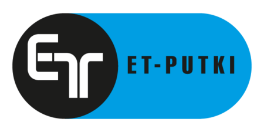

<mat-sidenav-container class="sidenav-container">
  <mat-sidenav position="end" #drawer class="sidenav" fixedInViewport
      [attr.role]="(isHandset$ | async) ? 'dialog' : 'navigation'"
      [mode]="(isHandset$ | async) ? 'over' : 'side'"
      [opened]="(isHandset$ | async) === false">
    <mat-toolbar>
      <button mat-icon-button (click)="drawer.toggle()">
        <mat-icon>close</mat-icon>
      </button>
    </mat-toolbar>
    <mat-nav-list>
      <a mat-list-item href="#">tietoa meistä</a>
      <a mat-list-item href="#">lvi-palvelut</a>
      <a mat-list-item href="#">galleria</a>
      <a mat-list-item href="#">ota yhteyttä</a>
    </mat-nav-list>
  </mat-sidenav>
  <mat-sidenav-content>
    <mat-toolbar color="primary">
      
      <span class="spacer"></span>
      <button
        mat-icon-button
        type="button"
        aria-label="Toggle sidenav"
        mat-icon-button
        (click)="drawer.toggle()"
        *ngIf="isHandset$ | async">
        <mat-icon aria-label="Side nav toggle icon">menu</mat-icon>
      </button>
      <a href="#">tietoa meistä</a>
      <a href="#">lvi-palvelut</a>
      <a href="#">galleria</a>
      <a href="#">ota yhteyttä</a>
    </mat-toolbar>
  </mat-sidenav-content>
